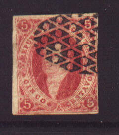
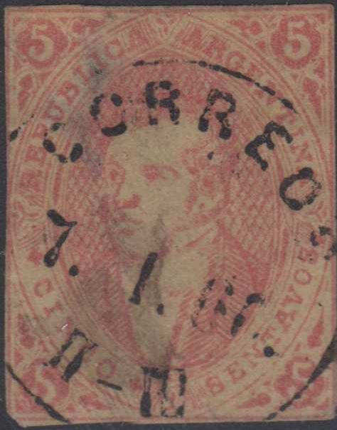
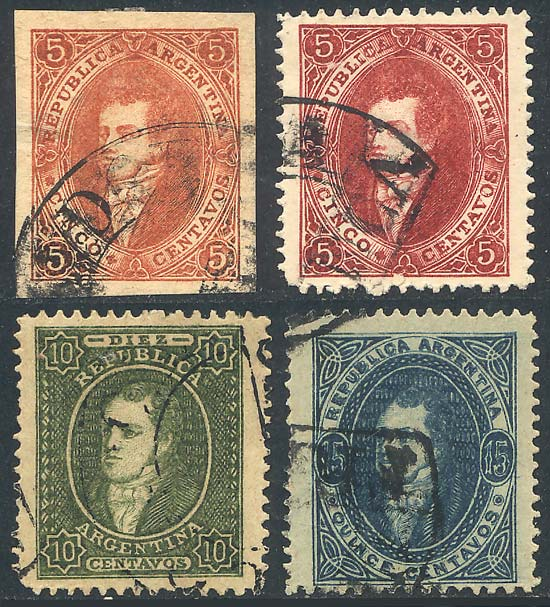
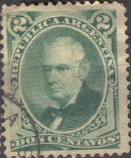
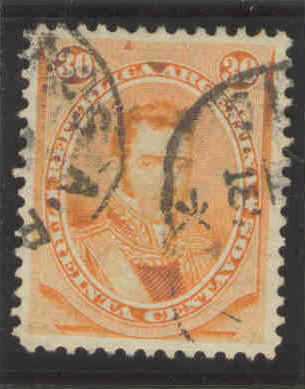
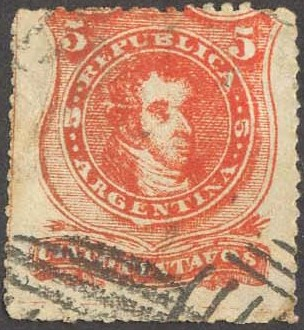
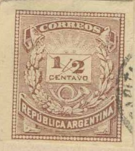
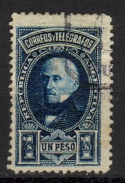

Return To Catalogue - Argentine 1858-1863 - Argentine 1892-1920 - Argentine miscellaneous - Corrientes - Buenos Aires
Note: on my website many of the
pictures can not be seen! They are of course present in the
catalogue;
contact me if you want to purchase it.
For stamps of Argentine issued from 1858 to 1863 click here.


5 c red 10 c green 15 c blue
For the specialist: these stamps were first issued with watermark 'RA' in fancy letters. They exist both imperforate and perforated 11 1/2. In 1867 they were re-issued imperforate and unwatermarked. Also in 1867 an unwatermarked perforated 5 c was issued. Be careful, since the imperforate stamps are worth much more than the perforated ones, the perforations often have been cut off! Essays on carboard paper were also thinned pretending to be genuine stamps.
The watermark 'RA' as seen from the backside of a 15 c stamp.
Value of the stamps |
|||
vc = very common c = common * = not so common ** = uncommon |
*** = very uncommon R = rare RR = very rare RRR = extremely rare |
||
| Value | Unused | Used | Remarks |
With watermark, imperforate |
|||
| 5 c | RRR | RR | |
| 10 c | RRR | RRR | |
| 15 c | RRR | RRR | |
| With watermark, perforated | |||
| 5 c | *** | ** | |
| 10 c | R | *** | |
| 15 c | RR | R | |
| No watermark, imperforate | |||
| 5 c | RRR | R | |
| 10 c | RRR | RRR | |
| 15 c | RRR | RRR | |
| No watermark, perforated | |||
| 5 c | RRR | RR | |


Reprint of the 5 c, I have also seen reprints of the 5 c in the
colours black, blue and green. Next to it two reprints in black
of the 5 c and 10 c value. These are probably all Liechtenstein
reprints. I've also seen a black 15 c Liechtenstein reprint.
Other reprints exist, from plates that were defaced after the H.F.Liechtenstein reprints were made.
(I've been told that these are reprints made by Peplow? in 1905?
Note the horizontal and vertical defacing scratches across the
stamps, reduced sizes)
I have also seen some primitive forgeries:


Images obtained from
http://www.seymourfamily.com/Stamp_Collecting.htm

This forgery of the 5 c has inscription "SENTAVOS"
instead of "CENTAVOS". Note the "CORREOS
7.1.60. II-III" forged cancel that can be found on
forgeries of many other countries as well.


Most likely another forgery type.
I know that the forger Oneglia made a forgery of the 10 c value. I have no further information.

These might be Oneglia forgeries.





1 c violet (Balcarce) 2 c green (Lopez) 4 c brown (Moreno) 5 c red (Rivadavia) 8 c red (Rivadavia) 10 c green (Belgrano) 15 c blue (San Martin) 15 c orange (San Martin, 1888) 16 c green (Belgrano) 20 c blue (Sarsfield) 24 c blue (1877, San Martin as 15 c) 25 c red (Alvear) 30 c orange (Alvear) 60 c black (Posadas) 90 c blue (Saavedra)
For the specialist: the 5 c exists with background consisting of horizontal lines and with the background consisting of crossed lines; the central design also shows slight differences. These stamps were issued perforated 12 (all values except 15 c orange, 16 c and 20 c), perforated 11 1/2 (values 5 c and 15 c orange only, issued 1888) or rouletted (5 c, 8 c, 16 c, 20 c and 24 c only, issued 1876-77).
Value of the stamps |
|||
vc = very common c = common * = not so common ** = uncommon |
*** = very uncommon R = rare RR = very rare RRR = extremely rare |
||
| Value | Unused | Used | Remarks |
| Perforation 12 | |||
| 1 c | *** | * | |
| 2 c | ** | * | |
| 4 c | ** | * | |
| 5 c | *** | * | Background crossed lines |
| 5 c | RR | *** | Background horizontal lines |
| 8 c | *** | * | |
| 10 c | R | *** | |
| 15 c blue | RR | *** | |
| 24 c | *** | * | |
| 25 c | RR | *** | |
| 30 c | RR | R | |
| 60 c | R | *** | |
| 90 c | R | *** | |
Rouletted |
|||
| 5 c | RRR | RR | |
| 8 c | R | * | |
| 16 c | *** | * | |
| 20 c | *** | ** | |
| 24 c | *** | ** | |
| Perforated 11 | |||
| 5 c | *** | * | Background crossed lines |
| 5 c | R | ** | Background horizontal lines |
| 15 c orange | *** | ** | |
Surcharged with large number (1877)


'1' on 5 c red '2' on 5 c red '8' on 10 c green
Value of the stamps |
|||
vc = very common c = common * = not so common ** = uncommon |
*** = very uncommon R = rare RR = very rare RRR = extremely rare |
||
| Value | Unused | Used | Remarks |
| Perforation 12 | |||
| '1' on 5 c | R | *** | Inverted surcharge: RR |
| '2' on 5 c | RR | RR | Inverted surcharge: RR |
| '8' on 10 c | RR | R | Inverted surcharge: RRR |
Forged overprints are known to exist. Inverted overprints exist, however, forgeries of these inverted overprints also exist. Example of such a forgery:
Overprinted '(PROVISORIO)' and value (1882)
(Reduced sizes)
1/2 on 5 c red
This overprint exists with a perforated horizontally across the stamp (last stamp in the picture). Two different types of the overprint exist, mainly different in the 'P' (see the pictures).
Value of the stamps |
|||
vc = very common c = common * = not so common ** = uncommon |
*** = very uncommon R = rare RR = very rare RRR = extremely rare |
||
| Value | Unused | Used | Remarks |
| 1/2 c on 5 c | *** | *** | Perforated in the center, both types same value |
| 1/2 c on 5 c | ** | ** | No perforation in the center, both types same value |
Overprinted (1884)
'1884 1/2' on 5 c red '1884 1/2' (red or black) on 15 c blue '1 C 1884' (red) on 15 c blue 'CUATRO Centavos 1884' on 5 c red
All these stamps exist with inverted surcharge (R to RR).
Value of the stamps |
|||
vc = very common c = common * = not so common ** = uncommon |
*** = very uncommon R = rare RR = very rare RRR = extremely rare |
||
| Value | Unused | Used | Remarks |
| 1/2 c on 5 c | *** | *** | |
| 1/2 c on 15 c | *** | *** | Black or red surcharge |
| 1 c on 15 c | *** | *** | |
| 4 c on 5 c | *** | *** | |

Postal stationery in the same design: 5 c red, issued in 1888
Fournier made forgeries of these overprints, examples taken from 'The Fournier Album':
Spiro made forgeries of the un-surcharged 10 c and 15 c stamps:


(Images obtained from
http://www.seymourfamily.com/Stamp_Collecting.htm)

A forgery of the 5 c value, possibly made by Spiro as well. The
ornaments above 'CINCO' don't go up far enough, the face and the
lettering are badly done. I've also seen it cancelled with
parallel bars.

Image obtained from
http://www.seymourfamily.com/Stamp_Collecting.htm
1/2 c brown 1 c red 12 c blue
For the specialist: two types slightly differing exist of these stamps (engraved and lithographed). The perforation is 12 or 14 (the engraved ones only exist perforated 12).
Value of the stamps |
|||
vc = very common c = common * = not so common ** = uncommon |
*** = very uncommon R = rare RR = very rare RRR = extremely rare |
||
| Value | Unused | Used | Remarks |
| Lithograped | |||
| 1/2 c | ** | * | |
| 1 c | *** | ** | |
| 12 c | R | *** | |
| Engraved | |||
| 1/2 c | * | * | |
| 1 c | ** | * | |
| 12 c | R | * | |

Postal stationery in the same design; 1/2 c brown, first issued
in 1882
Essays in a slightly different design can be found:
(Essay, I have only seen the 12 c value)
1/2 c blue (Urquiza) 2 c green (Lopez) 3 c green (Celman) 6 c red (Sarmiento) 10 c brown (Avellaneda) 20 c green (Roca) 25 c violet (Belgrano) 30 c brown (Dorrego) 40 c grey (Moreno) 50 c blue (Mitre)
For the specialist; most of these stamps are perforated 11 1/2, but the 6 c and 40 c also exist perforated 12.
Value of the stamps |
|||
vc = very common c = common * = not so common ** = uncommon |
*** = very uncommon R = rare RR = very rare RRR = extremely rare |
||
| Value | Unused | Used | Remarks |
| 1/2 c | * | * | |
| 2 c | *** | *** | |
| 3 c | ** | ** | |
| 6 c | R | R | |
| 10 c | *** | ** | |
| 20 c | *** | ** | |
| 25 c | R | *** | |
| 30 c | R | ** | |
| 40 c | RR | *** | |
| 50 c | RR | *** | |




1/4 c green (Paz, 1891) 1/2 c blue (Urquiza) 1 c brown (Sarsfield) 2 c violet (Derqui) 3 c green (Celman) 5 c red (Rivadavia) 6 c black (Sarmiento) 8 c red (Rivadavia, 1891) 10 c brown (Avellaneda) 12 c blue (Alberdi) 40 c olive (Moreno) 50 c orange (Mitre) 60 c black (Posadas) 1 P blue (S.Martin) 5 P blue (Lamadrid) 10 P brown (non issued) 20 P green (Brown) 50 P red (non issued)
A certain amount of the 10 P and 50 P values were stolen, it was therefore decided not to put these two values in circulation.
Value of the stamps |
|||
vc = very common c = common * = not so common ** = uncommon |
*** = very uncommon R = rare RR = very rare RRR = extremely rare |
||
| Value | Unused | Used | Remarks |
| 1/4 c | * | * | |
| 1/2 c | * | * | |
| 1 c | * | * | |
| 2 c | * | * | |
| 3 c | ** | ** | |
| 5 c | ** | c | Two types |
| 6 c | ** | ** | |
| 8 c | *** | ** | |
| 10 c | *** | * | |
| 12 c | *** | ** | |
| 40 c | *** | * | |
| 50 c | *** | * | |
| 60 c | R | *** | |
| 1 P | RR | R | |
| 5 P | RR | RR | |
| 10 P | RRR | RRR | |
| 20 P | RR | RR | |
| 50 P | RRR | RRR | |
Surcharged


'1/4' (in black or red) on 12 c blue
Value of the stamps |
|||
vc = very common c = common * = not so common ** = uncommon |
*** = very uncommon R = rare RR = very rare RRR = extremely rare |
||
| Value | Unused | Used | Remarks |
| 1/4 c on 12 c | c | * | Black or red surcharge (same value) Inverted surcharge: RR |
Fournier made forgeries of this overprint (see above for a picture taken from the Fournier Album).
For stamps of Argentine issued from 1892 to 1920, click here.


{kind=link}
{kind=link}
{kind=link}
{kind=link}
{kind=link}
{kind=link}